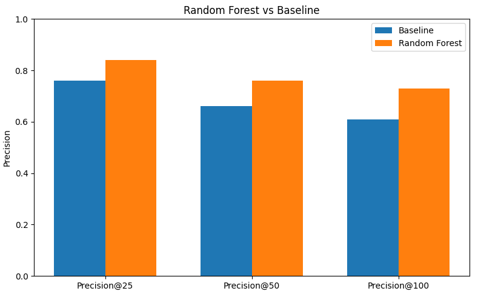
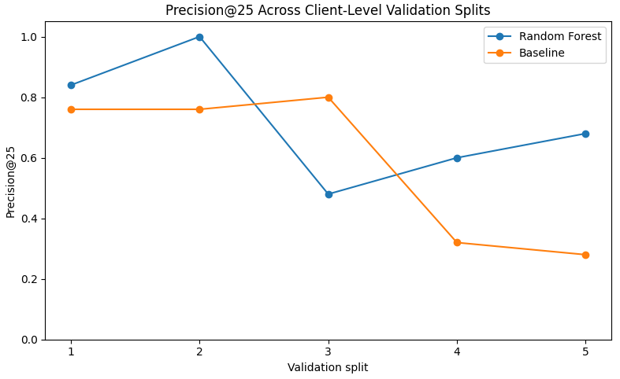
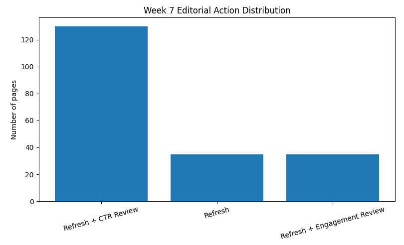

Can observable search-performance and freshness signals help editors decide which pages deserve attention first?
This study asks whether observable search-performance and content-freshness signals can identify content items that are most likely to be declining, helping editors prioritize pages for review. Using an anonymized FlyRank dataset containing 30,000 content items, the analysis uses impressions, content age, average search position, CTR, and time since last update while excluding label-derived fields to avoid leakage. A Random Forest classifier was compared with a transparent baseline using PR-AUC and Precision@K under client-level grouped validation. On the primary evaluation split, Random Forest improved PR-AUC from 0.5237 to 0.6064 and Precision@25 from 0.76 to 0.84, but Precision@25 varied from 0.48 to 1.00 across five validation splits. The resulting ranked queue is intended as decision support for editorial prioritization, not as proof of future decline, a causal explanation of performance, or an automatic instruction to refresh content.
The operational question is not "which page will fail?" It is "where should an editor look first?"
Content teams can face a simple operational problem: there may be many pages to review, but limited editorial capacity. Reviewing every page equally makes it difficult to decide where attention should go first.
This project asks whether observable search-performance and content-freshness signals can be used to rank content items by their likelihood of appearing in a declining state. The decision supported by the analysis is therefore which pages an editor should review first, rather than whether a page should automatically be changed.
The output is a ranked content-review queue. A human editor can use that ranking and the associated reason codes to focus attention on higher-priority items, while still checking business context, search intent, factual accuracy, and content quality before taking action.
The model works with observable search, engagement, content-age, freshness, and trend signals.
The analysis uses the anonymized FlyRank
content-performance dataset provided for the internship
capstone:
data/raw/content_refresh_anonymized.csv.
The supplied file contains 30,000 content items and 44 columns. The available fields span search performance, engagement, content characteristics, freshness, and trend signals.
impressions_90d
Observed search impressions over the 90-day window.
content_age_days
Age of the content item.
avg_position
Average observed search position.
ctr
Observed click-through rate.
days_since_last_update
Time since the content was last updated.
Label-derived trend fields and pseudonymous IDs were deliberately excluded from predictive features.
trend_direction and trend_pct
are excluded because they are used to derive the target.
Including them would leak information about the label into
the model.
content_id and client_id are used
for identification/grouping rather than as predictive
features.
The analysis does not use client names, domains, page URLs, private queries, credentials, or other client-identifying information. The supplied CSV does not expose an explicit release identifier, table name, or calendar date field, so this paper does not claim a specific release or date window that cannot be verified from the supplied material.
A transparent baseline first, then a learned ranking model with grouped validation and leakage checks.
The target is
is_declining_label, defined as whether
trend_direction == "down".
The analysis first established a transparent baseline ranking and then compared a learned model against it on the same ranking task.
The final learned model is a Random Forest classifier.
Evaluation uses client-level grouping so that pages from the same client are not simply mixed between training and evaluation.
Performance is measured using PR-AUC and Precision@K, with the baseline evaluated on the same ranking task.
If pages from the same client appeared freely in both training and evaluation, performance could look stronger than it would when ranking content for a previously unseen client. Grouping by client provides a stricter test of generalization across client-level partitions.
The model improved on the primary evaluation split, but the advantage was not stable across every client split.
16,262 of 30,000 content items were labeled declining (54.21%). This base rate provides context for interpreting Precision@K.
| Metric | Baseline | Random Forest | Absolute change |
|---|---|---|---|
| PR-AUC | 0.5237 | 0.6064 | +0.0827 |
| Precision@25 | 0.76 | 0.84 | +0.08 |
| Precision@50 | 0.66 | 0.76 | +0.10 |
| Precision@100 | 0.61 | 0.73 | +0.12 |

The primary split does not tell the whole story. Across five client-level validation splits, Random Forest Precision@25 ranged from 0.48 to 1.00.

The Week 7 action playbook converted the ranked output into a practical queue containing 200 pages.
| Suggested action | Pages | Share |
|---|---|---|
| Refresh + CTR Review | 130 | 65.0% |
| Refresh | 35 | 17.5% |
| Refresh + Engagement Review | 35 | 17.5% |

The strongest result is useful, but it is not universal.
On the evaluated data, Random Forest produced stronger ranking performance than the baseline on the primary evaluation split and generated a ranked queue that can help prioritize editorial review. Substantial variation across client-level validation splits means the recommendations remain directional and subject to human judgment.
It does not predict Google's algorithm, prove that a page will decline, explain the causal reason for a decline, or establish that refreshing a page will increase traffic or rankings.
The model's practical output is a review queue, not an automatic content-change command.
The final stage converts the model ranking into a practical editorial review queue. Rather than automatically changing content, the system identifies pages that should receive attention first and provides reason codes to help editors understand the signals behind each recommendation.
The system is most defensible as a way to decide where to look first, while leaving the final editorial decision to a human.
The paper is backed by the internship notebook sequence and the project repository.
The analysis was developed as a sequence of notebooks in the FlyRank ML Internship repository. The capstone combines the outputs of the earlier stages into a workflow covering research framing, data checks, baseline development, modeling, validation, and recommendation generation.
The source dataset used by the notebooks is
data/raw/content_refresh_anonymized.csv.
The capstone records the final feature set, target definition,
evaluation metrics, validation splits, and recommendation output.
The capstone material supplied for this paper does not document a single random seed or pinned environment specification, so this paper does not claim bit-for-bit deterministic reproduction. The notebooks provide the inspectable workflow and reported evaluation outputs.
This analysis was completed using the dataset provided through the FlyRank ML Internship.
This project was completed as part of the FlyRank ML Internship. The analysis is intended for educational and decision-support purposes.
No client-identifying information, private queries, domains, or credentials are included in this paper.